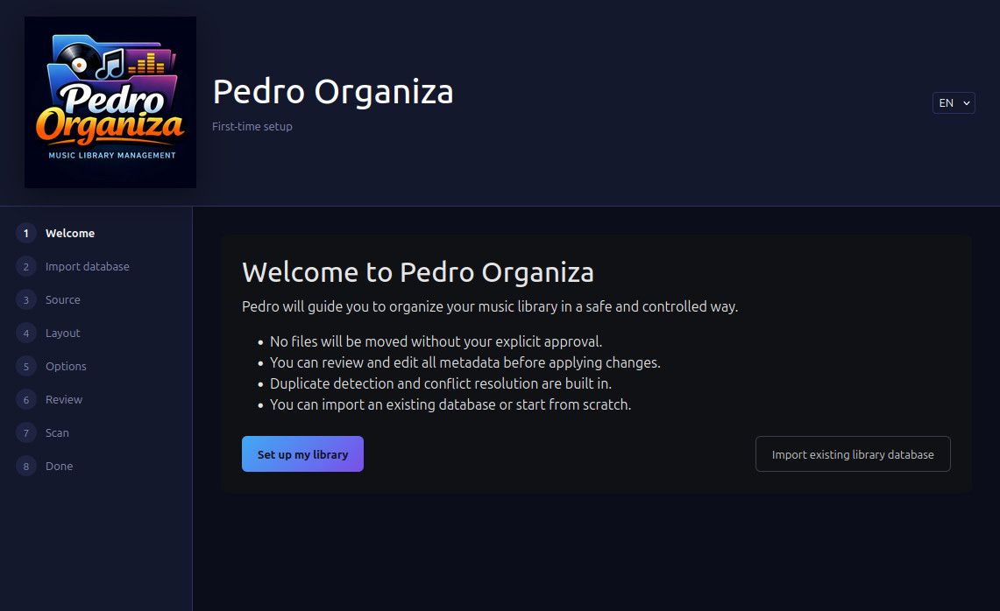
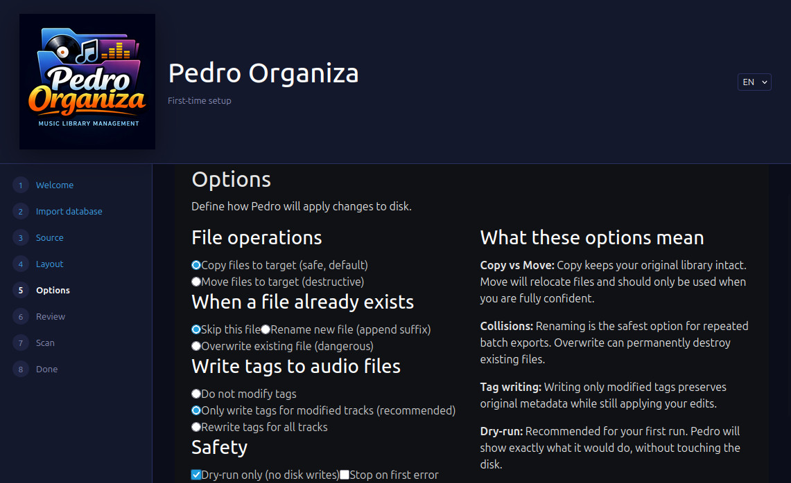
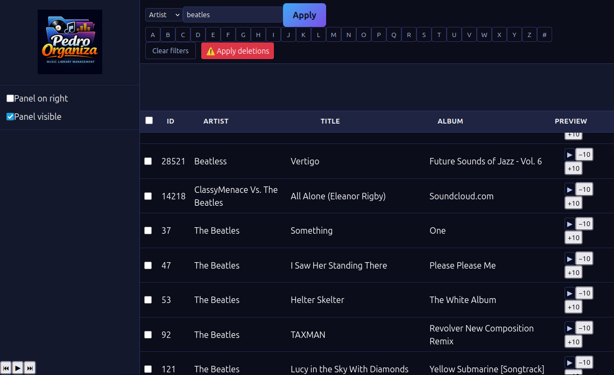

What is Pedro?
Pedro Organiza is a deterministic, knowledge-driven music library analyzer and restructuring engine. It builds a local SQLite knowledge base, detects duplicates and variants, clusters ambiguous files, and lets you review everything before any action is applied.
- Designed for tens of thousands of tracks
- Safe, auditable, deterministic workflows
- No silent destructive actions
- Local-first, no cloud, no subscriptions
Who Pedro Is For
Pedro is built for serious music collectors and library curators — especially those managing large, long-lived collections where safety matters.
- Collectors with tens or hundreds of thousands of tracks
- Users frustrated with fragile media player databases
- People who prefer local-first tools over cloud services
- Anyone who wants preview-before-apply guarantees
- Engineers and archivists who value deterministic behavior
Pedro is intentionally opinionated: it favors safety, auditability, and control over automation magic.
Core Principles
All analysis happens first. Files are never modified during ingestion or analysis.
Pedro assists; it never overrides your judgment.
The filesystem is an execution target, not the database.
Every step is reproducible, inspectable, and reversible.
Deterministic Duplicate Intelligence
Pedro 0.8 introduces deterministic duplicate clustering built on reproducible signals instead of opaque heuristics.
- Exact hash matching
- Audio fingerprint correlation
- Metadata similarity signals
- Transparent duplicate clusters
- Advisory primary suggestions (never automatic)
Every duplicate decision is explainable, reproducible, and reviewable — no black boxes, no surprise deletions.
Safety by Design
Pedro was engineered around one assumption: your music library is irreplaceable.
- Non-destructive by default
- Preview every filesystem operation before execution
- Deterministic outcomes — the same state produces the same result
- Quarantine instead of silent deletion
- Explicit confirmation required for permanent deletes
- Local SQLite knowledge base — your data stays yours
- Database-backed rollbacks and full auditability
Pedro behaves less like a media player and more like a controlled filesystem orchestration engine.
Interface



First Steps
Getting started with Pedro takes minutes. A typical workflow looks like this:
- Install Pedro from GitHub
- Set your active database
- Analyze your library
- Preview planned filesystem actions
- Apply changes when you are ready
pedro db set my_library.db
pedro migrate
pedro analyze --src /music --lib /library --with-fingerprint
pedro preview
pedro dupes stats
pedro apply --dry-run
Nothing touches your files until you explicitly apply it.
Get Started
Pedro Organiza is free for personal and non-commercial use and runs on Linux, macOS, and Windows. Installation and usage instructions are available on GitHub.
Pedro is actively used on large real-world libraries (50k+ tracks) and evolving rapidly through community feedback.
View Changelog Documentation & Download